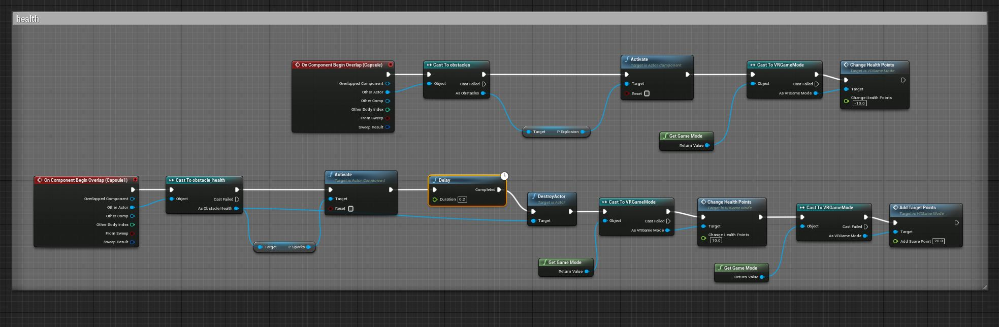
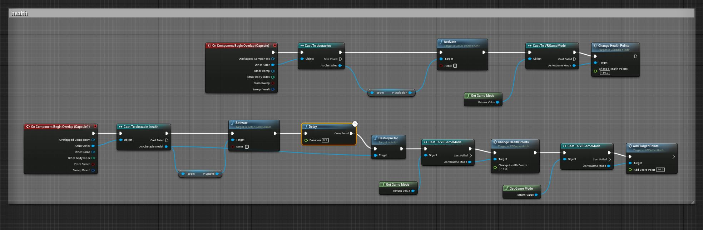

Pre-Thesis Game Dev week 9, 10, 11, 12
Pre-Alpha Build
So for my thesis progress, I had a lot of developmen to complete before I could get some user testing ready. Going through it, the tasks kept piling on and debugging while learning some important blueprinting methods was a constant back and forth. Previously I had completed making sure that my build would package and work on my Oculus as well as having my locomotion design working. My next plan was the figure out the main mechanic of shooting projectiles. Time is tight so I didn't get a chance to learn hitscan systems but projectiles should would out fine in my opinion. Here I've just copied over the projectile bluerprint that came with the VR example map's gun. I went ahead and modified the color of the projectile as well as increase the velocity in the X direction for the projectile movement propertyto get a more instant almost hitscan feel and reduce the arc. This is important since I wanted the option to implement a rhythem element. I was having some issues using the face buttons to package correctly, for some reason it worked in the editor and when testing it in tethered mode but after packaging it didn't at all. After a long amount of troubleshooting, I found out that using the grip buttons worked out fine.
I went ahead and modified some more of the gun blueprints and moved it over to my player character, in this system, it spawns the projectile where ever the controller is and also vibrates the controller for some haptic feedback. For an additional mechanic, I set it up so that both controllers had a collision box and if they were in close enough proximity, they would shoot out a bigger projectile.
I was having some issues using the face buttons to package correctly, for some reason it worked in the editor and when testing it in tethered mode but after packaging it didn't at all. After a long amount of troubleshooting, I found out that using the grip buttons worked out fine.
I went ahead and modified some more of the gun blueprints and moved it over to my player character, in this system, it spawns the projectile where ever the controller is and also vibrates the controller for some haptic feedback. For an additional mechanic, I set it up so that both controllers had a collision box and if they were in close enough proximity, they would shoot out a bigger projectile.
 While it was cool to shoot stuff, I need something to shoot, so I took some of the models included and flatened them and gave them a hitbox. the purpose of this is so that you can time when best to shoot them when I have the timing system set up. I also added sparks and explosion partical effects for when the player doesn't shoot the target in time or to confirm when you do hit it, I just have them set up with auto activate off.
While it was cool to shoot stuff, I need something to shoot, so I took some of the models included and flatened them and gave them a hitbox. the purpose of this is so that you can time when best to shoot them when I have the timing system set up. I also added sparks and explosion partical effects for when the player doesn't shoot the target in time or to confirm when you do hit it, I just have them set up with auto activate off.
 For the targets, I just have them all moving in the x direction using a timeline node. Casting was one of those things I got really used to in blueprints. I have it set up here where if the hitbox touches the correct color projectile, it destroys the projectile, activates the particle for a split second, destroys the target, then gives you points.
I originally had the targets all come in a predetermined sequence but decided to have them randomly spawn for variety. In the future if I am basing the placement off something like a song then I'll set them up in a predetermined way. Setting the classes up in an array, I have some in multiple slots to change the frequency of the ones I want to show up more or less. I also use an array to set up the targets to spawn in a random X or Z direction. In this example, it's only the Y direction since its an obstacle that you have to move left or right to avoid. I also have it set up so that after some time, the spawn rate increases to amp up the difficulty.
For the targets, I just have them all moving in the x direction using a timeline node. Casting was one of those things I got really used to in blueprints. I have it set up here where if the hitbox touches the correct color projectile, it destroys the projectile, activates the particle for a split second, destroys the target, then gives you points.
I originally had the targets all come in a predetermined sequence but decided to have them randomly spawn for variety. In the future if I am basing the placement off something like a song then I'll set them up in a predetermined way. Setting the classes up in an array, I have some in multiple slots to change the frequency of the ones I want to show up more or less. I also use an array to set up the targets to spawn in a random X or Z direction. In this example, it's only the Y direction since its an obstacle that you have to move left or right to avoid. I also have it set up so that after some time, the spawn rate increases to amp up the difficulty.
 The spawn locator is just an empty static mesh container, in this screen shot you can see my random location float array values.
The previous image was the spawner for obstacles and health items, the target spawner uses the same setup but with targets in the class array instead.
The spawn locator is just an empty static mesh container, in this screen shot you can see my random location float array values.
The previous image was the spawner for obstacles and health items, the target spawner uses the same setup but with targets in the class array instead.
 I placed the spawns out in the distance so that the player can plan their moves accordingly. Here you can also see a special wall I set up which I set up to destroy projectiles so they don't shoot things too early, and to destroy targets so that you have to shoot them in time.
In this snip you can see the way I set up the target destroyers for those who can't shoot them in time. There is also a volume further back to remove the obstacles that you must avoid to help reduce the amount of objects in the world.
Right here are the volumes for getting a good score when shooting them just a little too early or late, they haven't been implemented yet along with the sweet spot timing bonus.
After all of those, I have volumes to destroy the projectles that you shoot, this further reduces the amount of objects that build up in the level. This is important since I am trying to build for an optimized smooth experience on the Oculus Quest 2.
Here is the simple code I used to destroy the obstacles, you gain points for when you dodge them.
Over here you can see how the special wall is viewed in the level.
I placed the spawns out in the distance so that the player can plan their moves accordingly. Here you can also see a special wall I set up which I set up to destroy projectiles so they don't shoot things too early, and to destroy targets so that you have to shoot them in time.
In this snip you can see the way I set up the target destroyers for those who can't shoot them in time. There is also a volume further back to remove the obstacles that you must avoid to help reduce the amount of objects in the world.
Right here are the volumes for getting a good score when shooting them just a little too early or late, they haven't been implemented yet along with the sweet spot timing bonus.
After all of those, I have volumes to destroy the projectles that you shoot, this further reduces the amount of objects that build up in the level. This is important since I am trying to build for an optimized smooth experience on the Oculus Quest 2.
Here is the simple code I used to destroy the obstacles, you gain points for when you dodge them.
Over here you can see how the special wall is viewed in the level.
 This currently level actually doesn't have too many lights, objects or anything, so currently it's moving quite smoothly. One thing to note is that static lights have worked best so far with mobile VR builds from my experience.
This currently level actually doesn't have too many lights, objects or anything, so currently it's moving quite smoothly. One thing to note is that static lights have worked best so far with mobile VR builds from my experience.
 Over here is the material I copied over and modified. There was a prebuilt grid material that I made the background masked while changing the color of the wires.
To give a little more visual aid to know when to shoot the targets, I made a semi transparent background material for the grid.
Over here is the material I copied over and modified. There was a prebuilt grid material that I made the background masked while changing the color of the wires.
To give a little more visual aid to know when to shoot the targets, I made a semi transparent background material for the grid.
 I found that shooting without crosshairs was way easier than no scoping things, this was important since accuracy matters in this game where extra shots count against you. This is a simple colored text symbols I made in the widget editor, three different colors for three different crosshairs.
I found that shooting without crosshairs was way easier than no scoping things, this was important since accuracy matters in this game where extra shots count against you. This is a simple colored text symbols I made in the widget editor, three different colors for three different crosshairs.
 Setting them up wasn't actually too hard, I just had to attach them to the motion controllers and set them far enough.
In this snippit here, I set it up so that when the controller hitboxes are overlapping, I take the average with a lerp and draw the bigger crosshair inbetween them and change which things are visible so that you know where your big shot is going to shoot as well as know that it's activated.
Over here we are back at the wall blue print again and you can see how I destroy the extra projectiles and dock points for inaccuracy.
Setting them up wasn't actually too hard, I just had to attach them to the motion controllers and set them far enough.
In this snippit here, I set it up so that when the controller hitboxes are overlapping, I take the average with a lerp and draw the bigger crosshair inbetween them and change which things are visible so that you know where your big shot is going to shoot as well as know that it's activated.
Over here we are back at the wall blue print again and you can see how I destroy the extra projectiles and dock points for inaccuracy.
 For the points system, I drew up a simple widget which was just a text block.
For the points system, I drew up a simple widget which was just a text block.
 I set up a float variable that starts at 0 and gets pushed to the return value to draw out the score. The value is kept in the game mode.
I set up a float variable that starts at 0 and gets pushed to the return value to draw out the score. The value is kept in the game mode.
 To display it, I just have the widget float, attached in front of the camera.
The health bar is a similar system, it just a built in progress bar instead of a text block.
To grow or shrink this progress bar, I just take a stored float value from the game mode and divide it by 100.
To display it, I just have the widget float, attached in front of the camera.
The health bar is a similar system, it just a built in progress bar instead of a text block.
To grow or shrink this progress bar, I just take a stored float value from the game mode and divide it by 100.
 Storing things in the game mode turned out to be pretty nice, all I had to do was make the varibles here and cast them out whenever I needed them.
Storing things in the game mode turned out to be pretty nice, all I had to do was make the varibles here and cast them out whenever I needed them.
 Over here I have it set up so that you take damage from the obstacles and gain health from the health targets as well as gain some points too.

A similar set up, this is showing the targets being missed and activating an explosion and docking points.
Over here I have it set up so that you take damage from the obstacles and gain health from the health targets as well as gain some points too.

A similar set up, this is showing the targets being missed and activating an explosion and docking points.
 I ended up making a very hacky way to set up the start of the game as well as restart. This here is just a blueprint with a simple widget I drew with a hitbox volume.
When you shoot the start button with any type of ammo you open up the main level fresh.
The main menu map is literally just an empty level with the button. I think in the future, I'll include controls here to explain how to play to new people.
For restarting and stopping the game when your life goes to zero, I have an extra hacky method. I made a giant volume that destroys any target remaining and future ones as well. Shooting th restart sends you back to the main menu map.
I ended up making a very hacky way to set up the start of the game as well as restart. This here is just a blueprint with a simple widget I drew with a hitbox volume.
When you shoot the start button with any type of ammo you open up the main level fresh.
The main menu map is literally just an empty level with the button. I think in the future, I'll include controls here to explain how to play to new people.
For restarting and stopping the game when your life goes to zero, I have an extra hacky method. I made a giant volume that destroys any target remaining and future ones as well. Shooting th restart sends you back to the main menu map.
 Here is just how the blueprints look, I'm sure there's a better way to handle this but for now this works out pretty great for me.
Here is just how the blueprints look, I'm sure there's a better way to handle this but for now this works out pretty great for me.
 To save even more time, the restart volume just sits at the bottom and changes location when you lose.
Here's a recap of how I set up the movement system, over here is how I store the values of where you are pointing.
To save even more time, the restart volume just sits at the bottom and changes location when you lose.
Here's a recap of how I set up the movement system, over here is how I store the values of where you are pointing.
 Here is how you move from left to right when you press the button while pointing in the correct direction. A long hold sends you two spaces over instead of one if there is space.
Here is how you move from left to right when you press the button while pointing in the correct direction. A long hold sends you two spaces over instead of one if there is space.
 The update here is that it's a little bit more organized and that I added some fun particle effects for when you boost over.
The update here is that it's a little bit more organized and that I added some fun particle effects for when you boost over.
 And here's a copy for the other controller, you can always check out my previous post for more indepth overview on how this motion works.
And here's a copy for the other controller, you can always check out my previous post for more indepth overview on how this motion works.
 I'm glad to say that I took up the challege of learning all these things about blueprints and putting this all together for a prototype to start player testing with. Now that the skeleton is all set up, I only need to modify things here and there and add the meat and potatoes of 3D art that I'm already experienced with!
I'm glad to say that I took up the challege of learning all these things about blueprints and putting this all together for a prototype to start player testing with. Now that the skeleton is all set up, I only need to modify things here and there and add the meat and potatoes of 3D art that I'm already experienced with!
home
while (!deck.isInOrder()) {
print 'Iteration ' + i;
deck.shuffle();
i++;
}
print 'It took ' + i + ' iterations to sort the deck.';